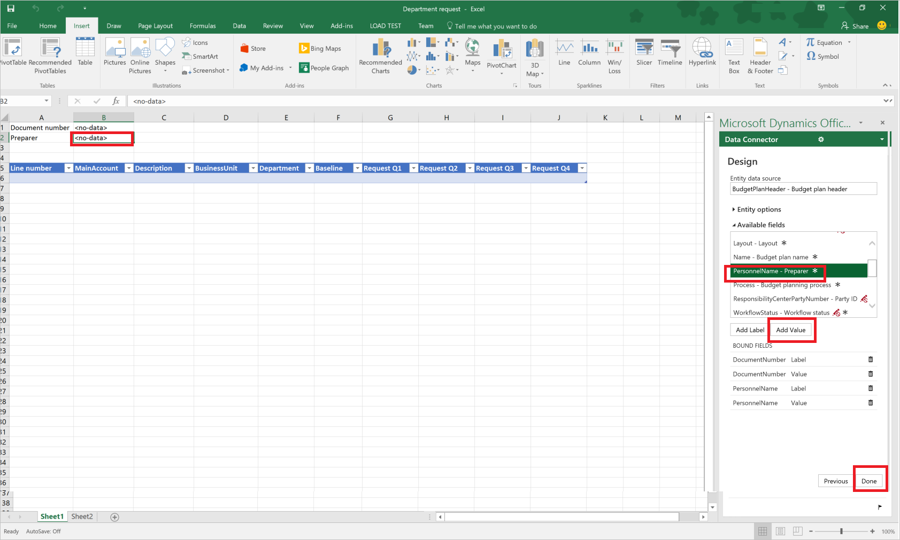
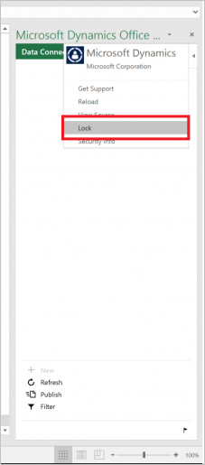

Budgetplanungsvorlagen für Excel
Important
Dynamics 365 for Finance and Operations hat sich zu speziell entwickelten Anwendungen entwickelt, mit denen Sie bestimmte Geschäftsfunktionen verwalten können. Weitere Informationen zu diesen Änderungen finden Sie im Dynamics 365-Lizenzierungshandbuch.
In diesem Thema wird beschrieben, wie Microsoft Excel-Vorlagen erstellt werden, die mit Budgetplänen verwendet werden können.
Dieses Thema zeigt, wie Excel-Vorlagen erstellt werden, die mit Budgetplänen mithilfe des Standarddemodatsatzes und der Benutzer Admin-Anmeldung verwendet werden. Weitere Informationen zu Budgetplanung, finden Sie unter Budgetplanungsüberblick. Sie können auch auf das Lernprogramm Budgetplanung zugreifen, um die Grundeinstellungsmodulkonfigurations- und -Verwendungsprinzipien zu ermitteln.
Erstellt ein Arbeitsblatt mithilfe der Budgetplandokumentvorlage.
Budgetplandokumente können mithilfe einer oder mehrerer Layouts angezeigt und bearbeitet werden. Jedes Layout kann eine zugeordnete Budgetplandokumentvorlage haben, um die Budgetplandaten in einer Excel-Kalkulationstabelle anzuzeigen und zu bearbeiten. In diesem Thema wird eine Budgetplandokumentvorlage mit einer vorhandenen Layoutkonfiguration generiert.
Öffnen Sie die Budgetplanliste (Budgetierung > Budgetpläne).
Klicken Sie auf Neu, um einen neuen Budgetplan zu erstellen.
Mithilfe der Zeilenoption Hinzufügen fügen Sie Zeilen hinzu. Layouts klicken, um die Budgetplandokument-Layoutkonfiguration anzuzeigen.
{kind=link}
{kind=link}
Sie können die Layoutkonfiguration anschauen und nach Bedarf anpassen.
- Wechseln Sie zu Vorlage > Erstellen, um eine Excel-Datei für dieses Layout zu erstellen.
- Nachdem die Vorlage generiert wurde, gehen Sie zu Vorlage > Ansicht, um die Budgetplandokumentvorlage zu öffnen und zu wiederholen. Sie können die Excel-Datei auf Ihrem lokalen Laufwerk speichern.
{kind=link}
Note
Das Budgetplandokumentlayout kann nicht geändert werden, nachdem ihr eine Excel-Tabelle zugeordnet wurde. Um das Layout zu ändern, löschen Sie die zugeordnete Excel-Vorlagendatei und erstellen Sie diese neu. Dies ist erforderlich, um die Felder im synchronisierten Layout und im Arbeitsblatt zu halten.
Die Excel-Vorlage enthält alle Elemente aus dem Budgetplandokumentlayout, in dem die Spalte Verfügbar im Arbeitsblatt auf "True" festgelegt ist. Überlappende Elemente sind in der Excel-Tabelle nicht zulässig. Wenn beispielsweise das Layout Spalten der Anforderung Q1, der Anforderung Q2, der Anforderung Q3 und der Anforderung Q4 enthält, und Anforderungsspalte eine gesamte, die eine Summe aller Spalten 4 vierteljährlichen darstellt, die eine Summe aller 4 Quartalsspalten enthält oder wenn die Totalspalte zur Verwendung in der Excel-Vorlage bereit steht. Die Excel-Datei kann keine überlappenden Spalten während der Aktualisierung aktualisieren, da Daten in der Tabelle veraltet und ungenau werden könnte.
Note
Um mögliche Probleme beim Anzeigen und Bearbeiten von Budgetplandaten mithilfe von Excel zu vermeiden, sollte derselbe Benutzer in Microsoft Dynamics 365 Finance und in Microsoft Dynamics Office Add-in Data Connector angemeldet sein.
Der Budgetplandokumentvorlage eine Kopfzeile hinzufügen
Um weitere Kopfzeilen hinzuzufügen, wählen Sie die oberste Zele in der Excel-Datei und fügen Sie die leere Zeile hinzu. Klicken Sie im Datenkonnektor auf Design, um Kopfzeilenfelder dem Excel hinzuzufügen.
Klicken Sie in der Registerkarte Design auf Felder hinzufügen und wählen Sie dann BudgetPlanHeader als Entitätsdatenquelle aus.
Gehen Sie mit dem Cursor auf den gewünschten Ort in der Excel-Datei. Klicken Sie auf Beschriftung hinzufügen, um die Feldbezeichnung dem ausgewählten Ort hinzuzufügen. Wählen Sie Wert hinzufügen, um die Wertefelder am ausgewählten Ort hinzuzufügen. Klicken Sie anschließend auf Fertig, um den Designer zu beenden.

{kind=link}
Der Budgetplandokumentvorlagentabelle eine berechnete Spalte hinzufügen
Nächste berechnete Spalten werden der zu generierenden Budgetplandokumentvorlage hinzugefügt. Eine Spalte Gesamte Anforderung, die die Anforderung Q1 zusammenfasst: Anforderung Q4 Spalten und eine Spalte Anpassung, die die Spalte Total Anforderung durch einen vordefinierten Faktor berechnet.
Klicken Sie im Datenkonnektor auf Design, um Spalten dem Excel hinzuzufügen. Klicken Sie neben dem BudgetPlanWorksheet auf Bearbeiten, um Spalten hinzuzufügen.
{kind=link}
Die ausgewählte Feldgruppe zeigt die Spalten an, die in der Vorlage verfügbar sind. Klicken Sie auf Formular, um einen neuen Code manuell hinzuzufügen. Geben Sie der neuen Spalte einen Namen und fügen dann die Formel in das Feld Formel ein. Klicken Sie auf Aktualisieren, um die Spalte einzufügen.
{kind=link}
Note
Um die Formel zu definieren, erstellen Sie die Formel im Arbeitsblatt und kopieren sie dann in das Fenster Design. Eine gebundene Finance and Operations-Tabelle wird normalerweise „AXTable1“ genannt. Um beispielsweise die Anforderung Q1 zusammenfassen: Fordern Sie die Spalten Q4 in der Tabelle an, die Formel = AxTable1[Request Q1]+AxTable1[Request Q2]+AxTable1[Request Q3]+AxTable1[Request Q4].
Wiederholen Sie diese Schritte, um die Spalte Regulierung hinzuzufügen. Mithilfe der Formel = AxTable1[Total request]*$I$1 für diese Spalte. Dadurch wird der Wert in Zelle I1 multipliziert und die Werte in der Spalte Anforderung gesamt, um die Regulierungsbeträge zu berechnen.
Speichern und schließen Sie die Excel-Datei. Klicken Sie unter Layouts auf Vorlage > Hochladen, um die gespeicherte Excel-Vorlage für den Budgetplan zu verwenden.
{kind=link}
Schließen -Sie den Layouts-Schieberegler. Im Dokument Budgetplan klicken Sie auf Arbeitsblatt, um das Dokument in Excel anzeigen und bearbeiten. Beachten Sie, dass die angepasste Excel-Tabelle verwendet wurde, um dieses Budgetplanarbeitsblatt erstellen und die berechneten Spalten mithilfe der Produktion aktualisiert werden, die in den vorherigen Schritten definiert wurden.
{kind=link}
Tipps und Tricks für das Erstellen von Budgetplanvorlagen
Kann ich zusätzliche Datenquellen in eine Budgetplanvorlage hinzufügen und verwendet?
Ja, Sie können das Menü Design verwenden, um weitere Entitäten dem gleichen oder anderen Arbeitsblättern der Excel-Tabelle hinzuzufügen. So können Sie die Datenquelle BudgetPlanProposedProject hinzufügen, um eine Liste mit vorgeschlagenen Projekten gleichzeitig zu erstellen und zu verwalten, wenn Sie mit Budgetplandaten in Excel arbeiten. Beachten Sie, das große Datenquellenmengen die Leistung der Excel-Arbeitsmappe beeinträchtigen können.
Sie können die Option Filter im Datenkonnektor hinzufügen, um den Datenquellen die gewünschten Filter hinzuzufügen.
Kann ich die Designoption im Datenkonnektor für andere Benutzer ausblenden?
Ja öffnen, die Optionen Datenkonnektor, um die Option Design für andere Benutzer auszublenden.
{kind=link}
Erweitern Sie die Datenkonnektoroptionen und deaktivieren das Kontrollkästchen Design aktivieren. Dies blendet die Option Design vom Datenkonnektor aus.
{kind=link}
Kann ich Benutzer daran hindern, den Datenkonnektor bei der Arbeit versehentlich zu schließen?
Es wird empfohlen, die Vorlage zu sperren, um Benutzer am Schließen zu hindern. Um die Sperre zu aktivieren, klicken Sie auf den Datenkonnektor in der oberen rechten Ecke. Ein erscheint ein Pfeil.
{kind=link}
Klicken auf den Pfeil für ein weiteres Menü. Wählen Sie Sperren.

{kind=link}
Kann ich andere Excel-Funktionen, wie Zellenformatierung, Farben, bedingte Formatierung und Diagramme mit Budgetplanvorlagen verwenden?
Ja, die meisten Standard-Excel-Funktionen arbeiten in den Budgetplanvorlagen. Es wird empfohlen, Farbkennung zu verwenden damit Benutzer zwischen Lesezugriff und bearbeitbaren Spalten unterscheiden können. Bedingte Formatierung kann verwendet werden, um problematischer Bereiche des Budgets hervorzuheben. Spaltensummen können leicht dargestellt werden, indem Standard-Excel-Formeln über der Tabelle verwendet. werden.
Sie können zusätzliche Pivottabellen und Diagramme für Gruppierungen und Visualisierungen von Budgetdaten erstellen und verwenden. Klicken Sie in der Registerkarte Daten auf der Gruppe Verbindungen auf Alle Aktualisieren und klicken Sie dann auf Eigenschaften verbinden. Klicken Sie auf die Registerkarte Nutzung. Unter Aktualisieren wählen Sie das Kontrollkästchen Daten beim Öffnen der Datei aktualisieren aus.